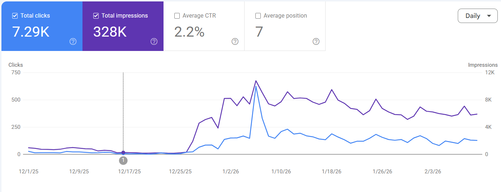

Case 09 / Sportstech
Seven Regions, One Recovered From Zero
Joining in August 2025 to find one of seven regions with traffic at almost zero — and rebuilding it audit-first, before a single new page was written.
Seven regions, one at zero
I joined Sportstech in August 2025. The search footprint covered seven regions — and one of them was effectively dead: organic traffic had dropped to almost zero, with pages still published, indexed inconsistently and competing with each other.
A collapse like that is rarely one bug. It is a stack of small failures compounding: technical debt, cannibalisation, broken internal flows and international signals pointing the wrong way. Treating it as one problem is how recoveries stall.
Traffic collapse driven by unresolved technical issues, on-page decay, weak internal linking, duplicate content and misconfigured international targeting — all fixable, none optional.
Audit first, always
Before prescribing anything, I ran a full audit across the region and its neighbours, because fixes applied in the wrong order get overwritten by the next crawl.
- Technical crawl: indexation gaps, redirect chains, orphaned templates and crawl-budget waste.
- On-page decay: titles, headings and metadata that no longer matched query intent.
- Internal linking: authority trapped on pages that could not use it, money pages starved of link flow.
- Duplicate content: near-identical category and product copy splitting relevance across URLs.
- International SEO: hreflang conflicts, canonical choices and market-folder signals sending mixed messages.
The rebuild
Technical foundation repaired
Indexation and canonicalisation fixed at the source: clean URL sets, correct directives, sitemaps that reflected reality, and crawl budget redirected to pages that could actually rank.
Duplicate content consolidated
Near-duplicate pages merged and redirected so relevance pooled instead of splitting — the single biggest lever in a cannibalisation-driven collapse.
Internal linking rebuilt
Topic clusters wired so authority flows from informational content into commercial pages, with crawl depth pulled down for the pages that earn money.
On-page systemised
Titles, descriptions and header hierarchies rewritten against real query data — not guesswork — then templated so every market inherits the same standard.
International SEO aligned
hreflang, canonicals and market folders cleaned up so each region ranks the right page in the right country, on one domain strategy.
Monitoring loop installed
Weekly GSC and crawl checks to catch regressions early, so the recovery held instead of decaying back.
Proof of recovery
Within the recovery window, the region moved from almost zero to 7.29K clicks and 328K impressions — measured in Search Console, not estimated.

And the rebuild did not stop at flat recovery. The same one-domain strategy that stabilised the collapsed region now compounds across every market — authority from sportstech.de lifts each country folder.
| Market | Ranking keywords | Change | Est. visits/month | Change |
|---|---|---|---|---|
| FR | 1.3K | +113% | 20.4K | +145% |
| AT | 617 | +52% | 2.9K | +43% |
| CH | 187 | +67% | 1.4K | +271% |
| IT | 369 | +77% | 1.4K | +22% |
| ES | 368 | +53% | 940 | +29% |
| NL | 401 | +33% | 147 | +46% |
Results
From almost zero to a region that grows again — and stays grown.
The takeaway
A collapsed region is not a content problem — it is an order-of-operations problem. Audit, consolidate, wire the links, align the international signals. Then the traffic comes back and keeps compounding.